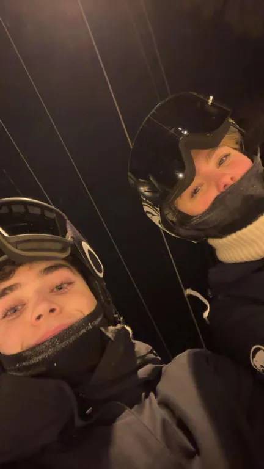

Jeg heter Luis, jeg er 18 år og bor i Kristiansand. Jeg går Studie VG3.
Jeg ble født i Spania og bodde der i 5 år før jeg flyttet til Norge. Jeg bor med mamma, pappa og lillebroren min. Foreldrene mine er begge leger, mamma jobber som radiolog på sykehuset og pappa jobber på Aleris i Lillesand som plastikk kirurg.
Jeg har også en kjæreste som bor i Søgne, hvor jeg egentlig er mesteparten av tiden min.
Jeg valgte IT1 siden jeg synes at det er viktig å kunne litt om hvordan data verden er bygget opp på.
Nida kødda litt, den ekte grunnen til at jeg valgte IT er fordi vennen min SIMON ville ha fordypning i faget, og siden jeg er en så snill venn og jeg viste heller ikke hvilket andre valgfag jeg skulle ha, valgte jeg IT

Favorittserien min er Game of Thrones, og akkurat nå holder jeg på å se den på nytt.
Game of Thrones lenkeJeg kan snakke spansk flytende, og jeg har en argentinsk-ish aksang.
En annen interess er bestevennen mi